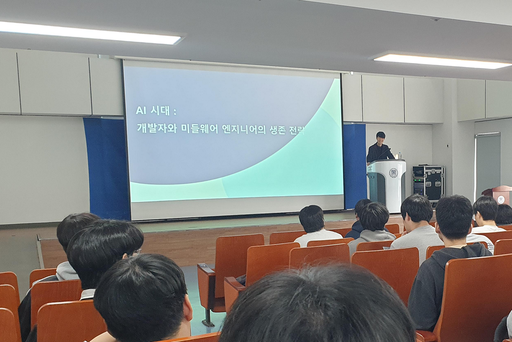
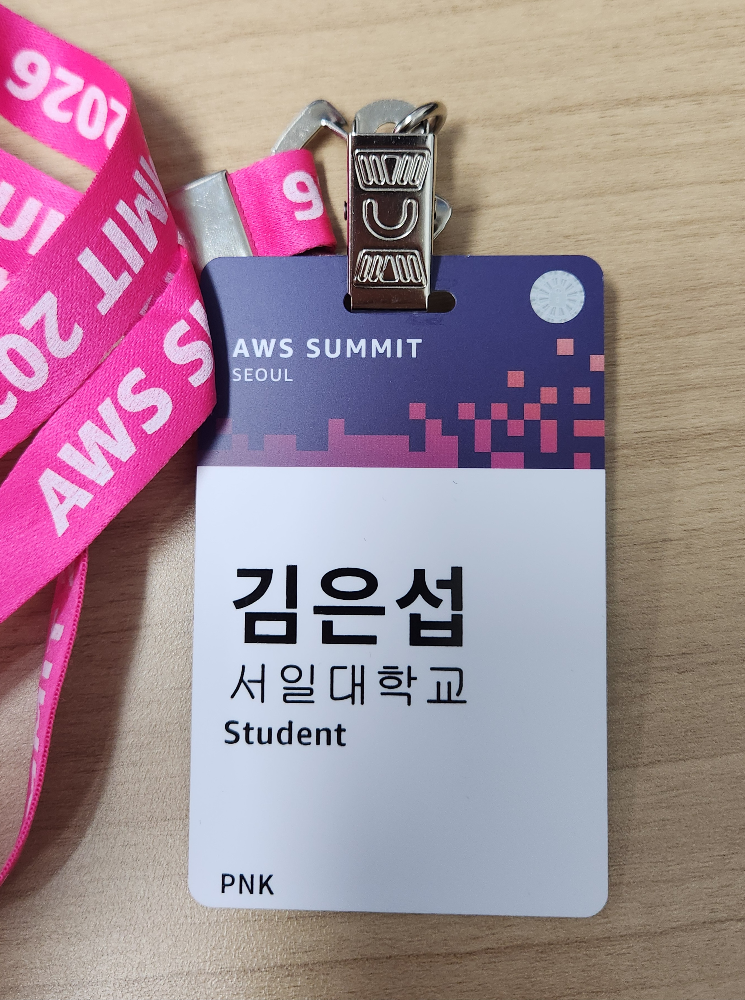
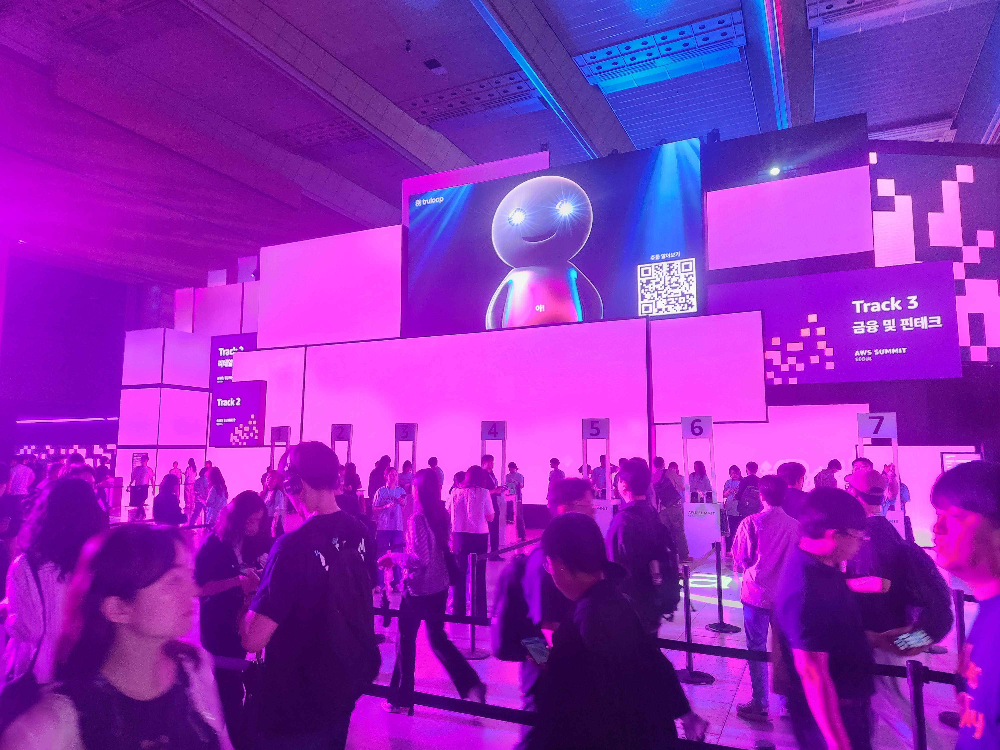

1. 활동 배경 및 목적
학부 과정에서 다진 Java 기반의 객체지향 설계(OOP) 이론을 엔터프라이즈급 실무 환경에 적용하기 위해 대우능력개발원의 Java/Spring 기반 클라우드 융합 엔지니어 양성 과정(2026.10 - 2027.03 예정) 참여를 확정했습니다. 단순한 기능 구현을 넘어, 대규모 트래픽을 견딜 수 있는 Spring Boot 기반의 견고한 아키텍처 설계와 AWS 클라우드 인프라 활용 능력을 내재화하는 것이 주된 목적입니다.
2. 세부 학습 계획 및 목표 역량
• 계층형 아키텍처(Layered Architecture) 내재화: Controller, Service, Repository 계층의 역할을 명확히 분리하여 결합도를 낮추고 유지보수성을 극대화하는 설계 패턴을 집중적으로 훈련할 계획입니다.
• ORM 및 DB 최적화: JPA/Hibernate를 활용한 객체 관계 매핑을 학습하고, N+1 문제 등 ORM의 구조적 한계를 네이티브 쿼리 및 Fetch Join으로 해결하는 트러블슈팅 역량을 확보할 것입니다.
• CI/CD 파이프라인 구축: GitHub Actions와 AWS EC2, Docker를 연동하여 무중단 배포 자동화 프로세스를 직접 구축해 보며 데브옵스(DevOps) 관점의 시야를 넓힐 예정입니다.
3. 기대 효과 및 향후 실무 적용
현업에서 요구하는 애자일(Agile) 스크럼 방법론과 Jira, Git-flow 전략을 팀 프로젝트에 적용함으로써, '문서를 통해 기술적으로 소통할 수 있는 엔지니어'로 성장할 것입니다. 이를 바탕으로 향후 캡스톤 디자인 및 개인 프로젝트의 백엔드 서버를 마이크로서비스(MSA) 관점에서 고도화하는 데 직접적으로 적용할 계획입니다.
1. 활동 배경 및 목적
백엔드 엔지니어에게 가장 중요한 '데이터를 얼마나 빠르고 효율적으로 처리할 것인가'에 대한 근본적인 논리력을 기르기 위해, 프로그래머스(Programmers) 플랫폼을 활용하여 지속적인 알고리즘 및 자료구조 최적화 트레이닝(2025.09 - 현재)을 진행하고 있습니다.
2. 세부 훈련 내용 및 기술적 직면 과제
• 시간/공간 복잡도 최적화: 단순 구현을 넘어 Big-O 표기법을 기준으로 알고리즘을 설계합니다. $O(N^2)$로 동작하는 완전 탐색 코드를 Hash Map이나 이분 탐색을 적용하여 $O(N \log N)$ 이하로 단축시키는 리팩토링 훈련을 반복하고 있습니다.
• 자료구조의 적재적소 활용: 대규모 트래픽 처리나 실시간 랭킹 시스템 등에 사용되는 Priority Queue(Heap), DFS/BFS 기반의 그래프 탐색, 그리고 Stack/Queue를 활용한 상태 관리 문제 등 Lv.2 ~ Lv.3 난이도의 핵심 문제 100여 개를 해결하며 Edge Case 대응 능력을 키웠습니다.
3. 인사이트 및 블로그 아카이빙
문제를 푸는 것에 그치지 않고, "왜 이 자료구조를 선택했는가?", "어디서 병목 현상이 발생했는가?"에 대한 기술적 고찰을 개인 기술 블로그에 꾸준히 아카이빙하고 있습니다. 이러한 훈련은 향후 게임 서버나 대규모 플랫폼의 백엔드 로직 설계 시, 불필요한 반복문을 줄이고 서버 자원을 극도로 절약하는 효율적인 코드 작성으로 이어질 것입니다.
1. 활동 배경 및 목적
정형화된 학업 프로젝트를 넘어 글로벌 생태계의 복잡한 레거시 코드를 읽어내는 역량을 기르고자 GitHub 기반의 오픈소스 프로젝트 분석 및 기여 활동(2026.03 - 현재)을 시작했습니다. 타인이 작성한 대규모 코드를 이해하고, 구조적 결함을 찾아내어 시스템을 개선하는 '유지보수 중심의 엔지니어링'을 경험하는 것이 핵심 목표입니다.
2. 주요 수행 내용 및 트러블슈팅
• 레거시 코드 병목 구간 리팩토링: 기존 오픈소스 내부에 존재하던 비효율적인 동기식 I/O 처리 로직과 중복된 메서드 호출 구간을 분석했습니다. 이를 가독성이 높고 실행 속도가 개선된 코드로 리팩토링하는 방안을 연구 중입니다.
• 버전 관리 및 협업 프로토콜 준수: Fork, Branch 생성, Commit 컨벤션 준수, 그리고 Pull Request(PR)로 이어지는 글로벌 Git Workflow를 체득했습니다. Issue 트래커를 통해 개선 사항을 논리적으로 제안하며, 텍스트 기반의 기술적 커뮤니케이션 능력을 향상시켰습니다.
3. 배운 점 및 실무적 가치
이 과정을 통해 "좋은 코드란 컴퓨터가 이해하기 쉬운 코드가 아니라, 다른 개발자가 읽고 수정하기 쉬운 코드"라는 소프트웨어 공학의 본질을 깨달았습니다. 이러한 오픈소스 생태계에서의 코드 리뷰 및 개선 경험은 향후 현업에서 팀원들과 충돌 없이 거대한 마이크로서비스 아키텍처를 구축하고 확장해 나가는 강력한 밑거름이 될 것입니다.
1. 활동 배경 및 목적
백엔드 엔지니어링의 근간이 되는 데이터베이스 아키텍처 설계와 SQL 튜닝 역량을 견고히 다지기 위해, 전공 스터디 그룹을 결성하여 SQLD(SQL Developer) 및 정보처리산업기사 취득을 목표로 강도 높은 학습을 진행했습니다. 단순 암기식 자격증 취득이 아닌, 실제 RDBMS의 동작 원리를 이해하는 데 초점을 맞췄습니다.
2. 세부 연구 내용 및 피드백 구조
• 데이터 모델링 및 정규화 연구: 비즈니스 요구사항을 반영한 개념적/논리적/물리적 데이터 모델링 과정을 상호 검토했습니다. 특히 이상 현상(Anomaly)을 방지하기 위한 정규화 기법과, 반대로 조회 성능을 극대화하기 위한 반정규화(De-normalization)의 트레이드오프(Trade-off)를 심도 있게 토론했습니다.
• 쿼리 실행 계획(Explain) 분석: 복잡한 계층형 쿼리(Hierarchical Query)와 병합(MERGE) 구문의 동작을 분석하고, 인덱스(Index)를 태우기 위한 최적의 SQL 작성법을 연구하며 상호 코드 리뷰 형식의 피드백을 주고받았습니다.
3. 핵심 성과 및 향후 로드맵
스터디의 첫 번째 목표였던 5월 31일 제61회 SQLD 시험을 통해 그간의 데이터베이스 지식을 성공적으로 검증했습니다. 이를 바탕으로 현재 진행 중인 '감정창고' 프로젝트의 DB 스키마를 3정규형(3NF)으로 완벽하게 설계하여 데이터 무결성을 확보할 예정이며, 하반기 정보처리산업기사 취득으로 CS 전반의 지식 체계를 완성할 것입니다.
특강명: AI 시대 개발자 생존 전략과 실무 경쟁력 제고
일시 및 장소: 2026.04 / 서일대학교 소프트웨어공학과 전공 강의실

AI 시대 백엔드 생존 전략 특강 현장 인증
1. 특강 참여 배경
최근 LLM(대형 언어 모델) 등 인공지능 기술이 폭발적으로 성장하며 코드 자동화가 대두되는 시점에서, 주니어 백엔드 엔지니어로서 어떤 대체 불가능한 본질적 경쟁력을 갖추어야 하는지 실무적 로드맵과 방향성을 재설정하고자 특강에 참여했습니다.
2. 핵심 인사이트: 아키텍처 중심 사고의 중요성
현업 책임 엔지니어의 강연을 통해, AI가 코드를 생성해 주는 시대일수록 오히려 전체 시스템의 설계 구조를 기획하는 '아키텍처링(Architecturing)' 역량이 본질임을 확신하게 되었습니다. 단순히 프레임워크의 사용법에 매몰되지 않고, 운영체제(OS), 네트워크 프로토콜, 그리고 RDBMS의 트랜잭션과 데드락 제어 등 컴퓨터 공학 기반 기술(Fundamental)에 대한 뼈대가 탄탄해야만 AI를 완벽히 통제하고 최적화할 수 있음을 깨달았습니다.
3. 향후 프로젝트 적용 방안
강연에서 얻은 인사이트를 바탕으로, 현재 준비 중인 학과 캡스톤 디자인 프로젝트에서 단순한 API 구현을 넘어, 로깅 시스템 구축 및 예외 처리 아키텍처를 고도화하여 실제 서비스가 가능한 수준의 백엔드 신뢰성을 확보하는 방향으로 프로젝트 비전을 확장했습니다.
| 보고자 | 김은섭 (202204240) | 소속 | 소프트웨어공학과 |
| 일시/장소 | 2026.05.20 / 코엑스 | 주제 | 생성형 AI, 클라우드 보안, 현대적 백엔드 아키텍처 |
|
 교내 전공 연계 참관 등록증 |
 AWS Summit 메인 홀 전경 |
1. 참관 목적 및 개요
최신 글로벌 클라우드 생태계의 기술 트렌드를 파악하고, 백엔드 개발자 관점에서의 대규모 데이터베이스 확장 전략과 고가용성(HA) 아키텍처 실무 지식을 습득하기 위해 'AWS Summit Seoul 2026'에 참관했습니다.
2. 주요 강연 내용 및 기술적 고찰
• AI 주도 개발(AI-DLC) 및 트러블슈팅: 삼성 어카운트 플랫폼 세션에서 발표된 '자율 클라우드 운영 에이전트' 도입 사례를 정밀하게 분석했습니다. 장애 감지 시간 10분, 복구 시간을 90% 이상 단축한 실무 지표를 통해, 안정적인 인프라 환경 제어와 모니터링 아키텍처 설계가 백엔드의 핵심 본질임을 재확인했습니다.
• 서버 인프라 최적화: 'Inside the Cloud' 부스에서 Trainium, Graviton 등 차세대 실물 칩셋을 관찰하며, 소프트웨어 로직뿐만 아니라 하드웨어 및 리눅스 환경 단위의 최적화가 전체 서버 운영 비용 절감에 미치는 막대한 영향력을 체감했습니다.
3. 종합 소감 및 향후 성장 로드맵
수많은 실무자들의 컨퍼런스를 통해 클라우드 보안과 트래픽 제어의 무게감을 실감했습니다. 이를 바탕으로 하반기 국비 교육과 연계하여 클라우드 배포 프로세스를 학습하고, 리눅스마스터 2급 취득을 통해 인프라 제어 체력을 기를 것입니다. 궁극적으로 정보보안산업기사 공부를 병행하여 시큐어 코딩 역량을 갖춘 '트래픽과 보안에 강한 백엔드 엔지니어'로 성장하겠습니다.